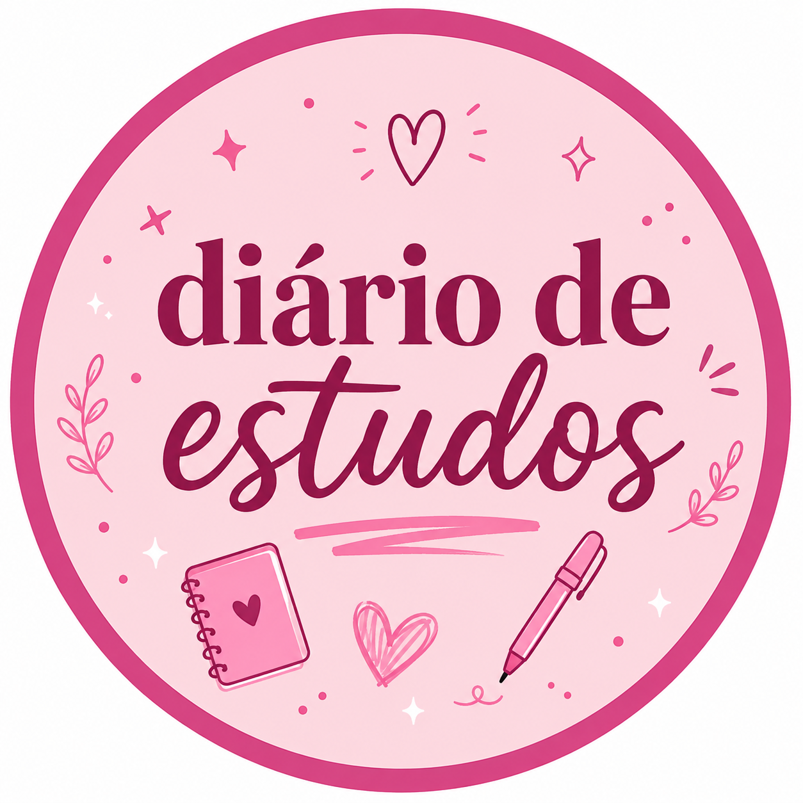
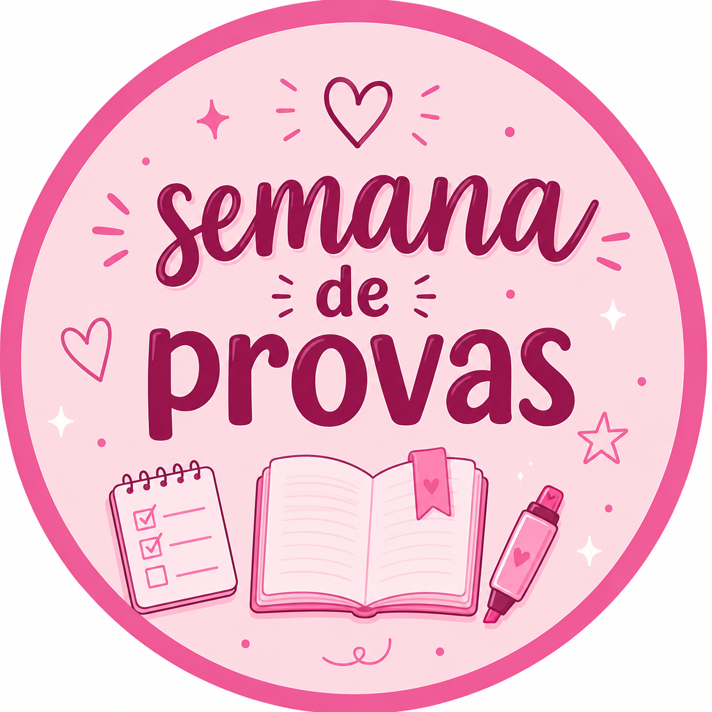
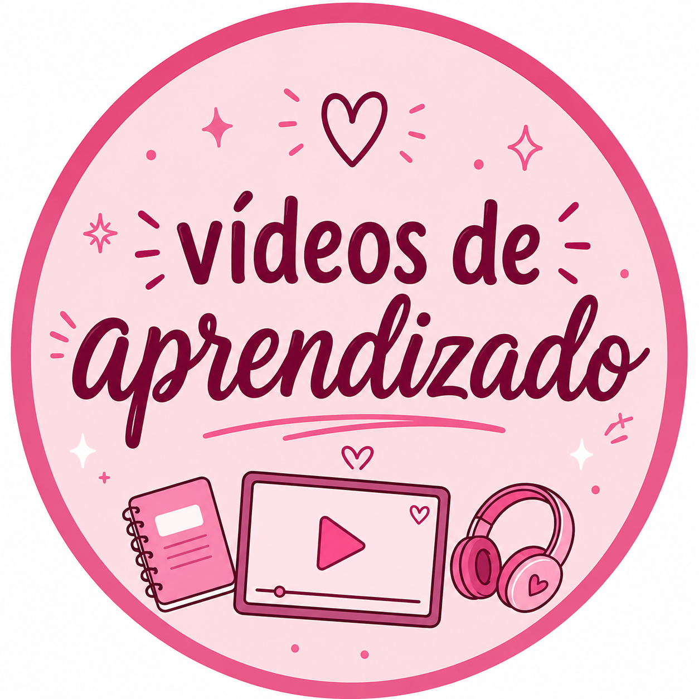
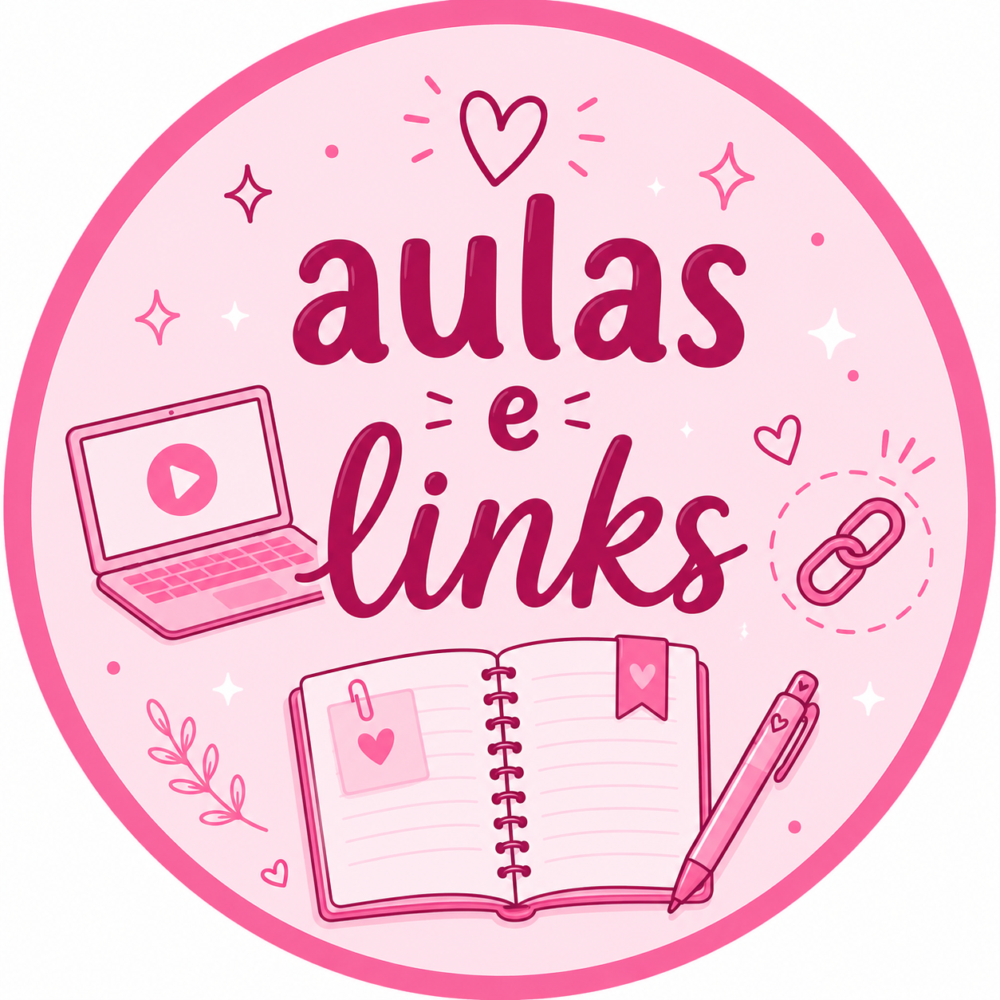

Bem-vindos ao meu Diário de Estudos!
Por: Giovanna de Souza
Sejam bem vindos ao meu blog! Aqui vou compartilhar dicas de estudos e várias curiosidades, então não fique de fora.
Compartilhando conhecimento, organização e foco pra gente estudar junto e ir mais longe.

Por: Giovanna de Souza
Sejam bem vindos ao meu blog! Aqui vou compartilhar dicas de estudos e várias curiosidades, então não fique de fora.
Por: Giovanna de Souza
O primeiro passo para você conseguir estudar bem é a organização! Você precisa organizar as matérias e descobrir a forma como entende melhor o conteúdo para realmente aprender.
Confira algumas dicas para te ajudar:
Organize o seu espaço:Comece arrumando um local fixo para estudar. Isso é muito importante para evitar distrações no meio do caminho.
Por: Giovanna de Souza
A rotina traz tranquilidade e cuida da saúde.
Manter uma rotina de estudos em dia é o melhor segredo para nunca ficar acumulando matéria. Quando você organiza seu tempo, tudo melhora: sua alimentação fica mais saudável, seu sono rende mais e o seu corpo agradece. O melhor de tudo? Aquela ansiedade, o medo e o nervoso antes das provas simplesmente somem, porque você sabe que se preparou com calma!

Por: Giovanna de Souza
Para te ajudar a entender melhor as dicas de estudos temos um video explicando, nao esqueça de assistir para tirar qualquer duvida que voce ainda tenha!
